Marketing Strategy of Music Box
MARCH 2,2018
1.在 youtube 上面放展示，或介紹產品的影片
請知名 youtuber 或可愛的小朋友錄製開箱文
辦抽獎活動
期間限定版
2.創粉絲專頁，放創作的產品，以及我們的理念，提供部份客製化
在粉絲專頁上設置活動，如：按贊分享及抽獎、票選等，增加知名度
按照節慶或客製化各種特別的音樂盒
期間限定版
3.在部落格或架一個網站，分享創作產品的步驟與過程，吸引 maker，將所需材料與並附上教學文，作為材料組合包賣出去
辦徵選比賽
開一個 Q&A 專區來解決 DIY 的相關問題。
Bluetooth-I
MARCH 9,2018
1.測試電源模組。
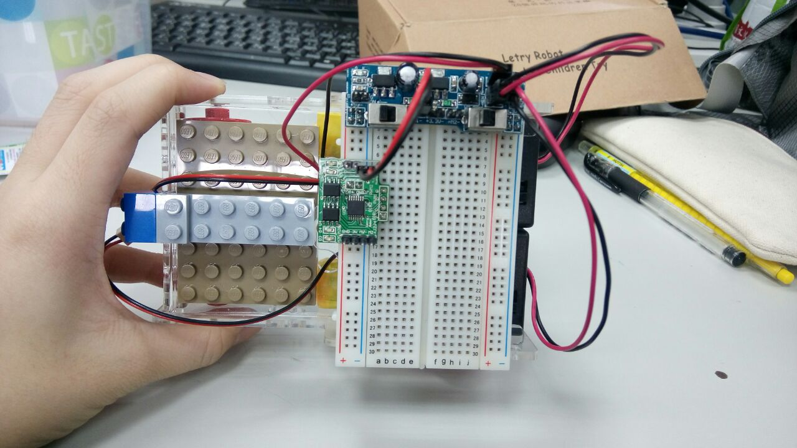2.將藍牙模組與 ATMega328 以 RX <-> TX 的方式插在麵包板上。
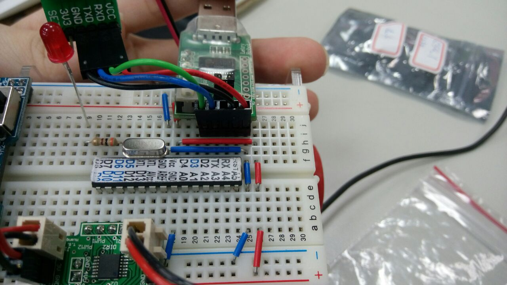3.開啟手機藍牙，並與自己組內的藍牙配對。
4.藍牙連上後，下載 apk 檔：http://irobot.ntue.edu.tw/EL/BlueTooth/files/UniversalBT.apk
整個過程藉由手機 -> 藍牙晶片 -> arduino 晶片，這樣的方式操作。
若沒有藍牙，可以用序列監控視窗（115200 baud //bits per second）取代，輸入 1 或 0 的 ASCII 即可測試
程式 1：用藍牙控制 LED 燈亮與否（1->亮 0->暗）
程式 2：用藍牙控制車子前進
Bluetooth-II
MARCH 16,2018
| USB | V.S. | 藍牙 |
| 5V | <-> | 5V |
| GND | <-> | GND |
| RX | <-> | TX |
| TX | <-> | RX |
AT COMMAND MODE:用跳接器（jumper）把 3.3V 和 set 短路，及進入AT MODE。
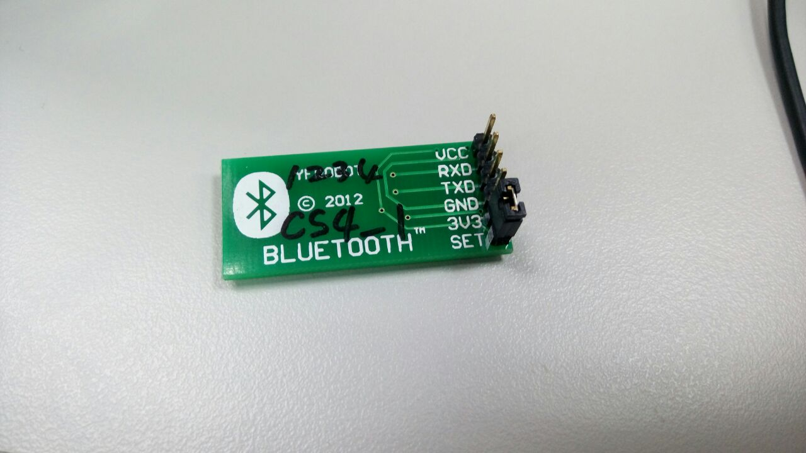 1. 接完之後，再插上 USB，打入 AT，會出現 OK。
2. 打入 AT+BAUD，會出現 +BAUD=8，代表他的 BAUD 是 115200
3. 要改 BAUD 為 9600 的話，就在 115200 下打入 AT+BAUD4，再回去 9600 下，輸入 AT+BAUD，就能看到 +BAUD=4
4. 打入 AT+HELP 可以看到所有 AT 指令
程式 1：LED 改成serialEvent（不是時時刻刻在偵測）函式名稱不能改（包含大小寫）
程式 2：LED 不讓他一直重複亮（收到 1 byte 的資料時，才會偵測）
程式 3：LED 加一顆 LED 讓他一直亮（loop），原本那顆一樣用藍牙控制（event），按1或0時（中斷指令），程式會先把他現在那一行程式做完，再執行中斷指令，影響到中斷的即時性
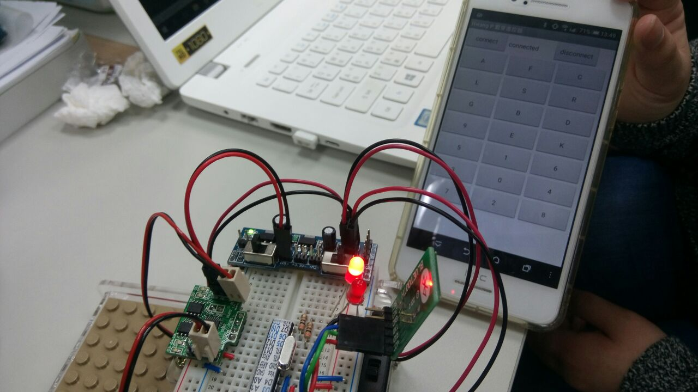程式 4：LED 從手機按 1 的按鈕，LCD 會出現 1 和 49（1 的 ASCII），藍牙(BT)的 TX 傳給晶片（ATMEGA）的 RX，傳輸的間隔時間要一致，我們利用 baud 來控制多久收/傳一次
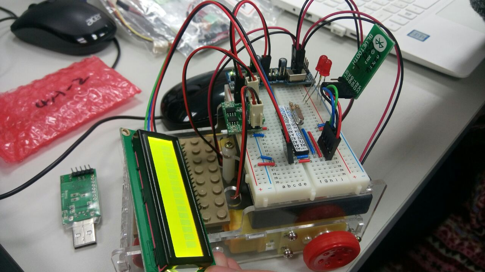Homework 1：UART（記得將藍牙和晶片的 GND 接在一起，如此一來才會有同樣的電位基準）
Homework 2：lcd.write 和 lcd.print的不同
APP Inventor
MARCH 23,2018
APP Inventor 官網：http://ai2.appinventor.mit.edu
進到官網後，左上角有個 Projects，點一下會看到下拉式選單。
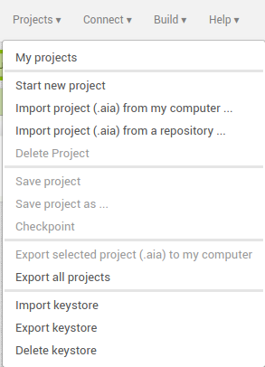其中的 My projects，可以看到如下的畫面，有自己所擁有的專案。
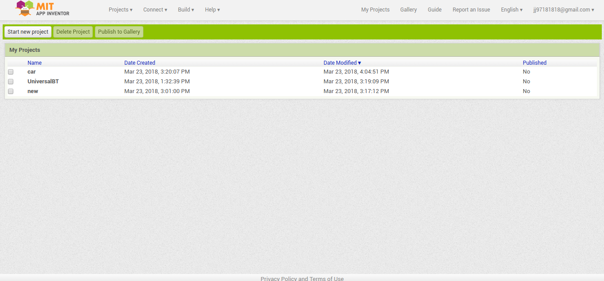左上角除了 Projects，還有 Connect，點一下同樣會看到下拉式選單。
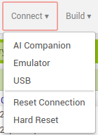在選擇一個專案，或開新專案後，在右上角會看到有兩種開發者模式：Designer 和 Blocks
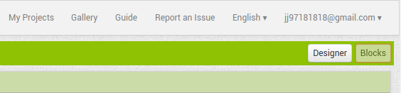這是 Blocks 模式，寫 APP 背後的程式。
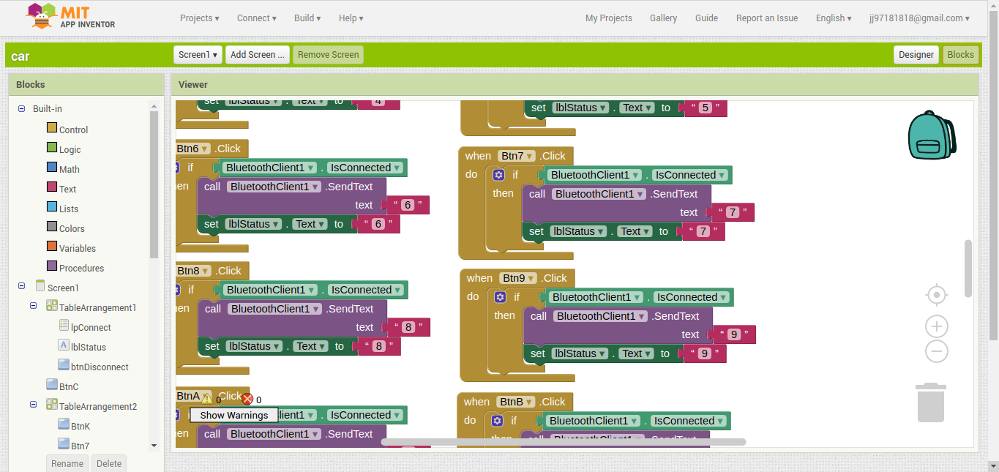這是 Designer 模式，做 APP 畫面設計。
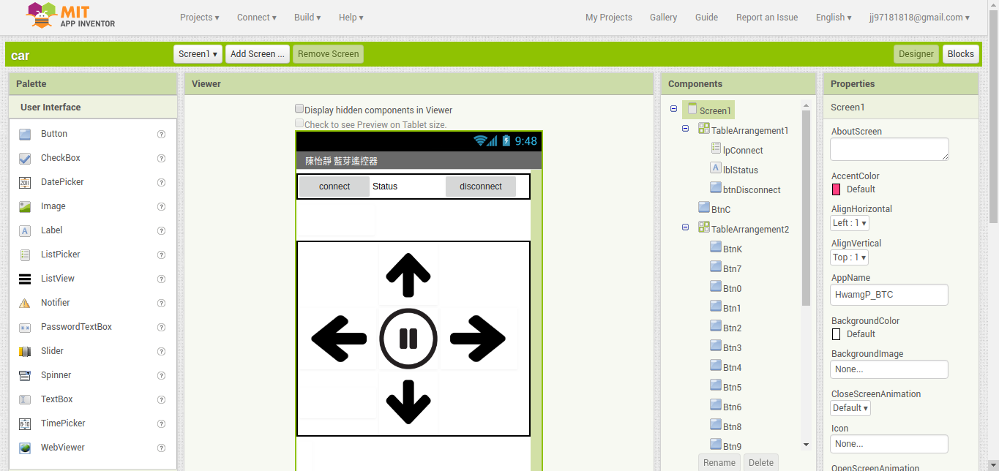程式 1：用手機 APP 按鈕，操控車子前後左右。
Gyroscope Control
MARCH 30,2018
AT+NAME 得到：+NAME=CS4_1（詢問名稱）
AT+NAMETCS4_1 得到：+NAME=TCS4_1（改名稱）
程式 1：陀螺儀控制車子前後左右
Voice Control
April 14,2018
Slave:
AT+DEFAULT
-> Arduino 程式中的 Baud rate 要設定正確，YFRobot 藍牙模組預設為 9600bps。
AT+CLEAR
AT+LADDR
-> 出現+LADDR=98:d3:31:b0:f7:55
接著把 ":" 變成 ","
然後把 slave 的 jumper 拿掉
Master:
AT+DEFAULT
AT+CLEAR
AT+CONNECT98,d3,31,b0,f7,55
YFrobot 藍牙模組要退休了owo
它是大陸公司自行開發的藍牙核心板 BC-04，和一般常用的 HC-05 不同。
AT 指令集也都不太相同。
之後我們要改成用 HC-05 了！
1.精巧音樂盒
可以有期間限定的版本
可以從手機傳音樂
2.ＫＴＶ點歌機
限定活動，例如：歌唱排名大賽
用麥克風遙控
會有燈光效果
3.搬小東西的機器人
讓機器人有語音提示的功能，使送貨更順利
可以組合很多台
程式 1：語音控制 LED 燈開關
程式 2：語音控制車子前後左右
Article
Gallery
Codes